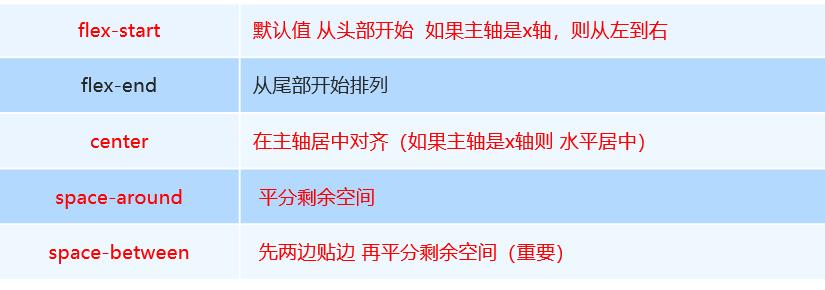

传统布局和flex布局对比
- 传统布局
- 兼容性好
- 布局繁琐
- 局限性，不能再移动端很好的布局
- flex布局
- 操作方便，布局极其简单，移动端使用比较广泛
- pc端浏览器支持情况比较差
- IE11或更低版本不支持flex或仅支持部分
- 建议
- 如果是pc端页面布局，还是采用传统方式
- 如果是移动端或者是不考虑兼容的pc则采用flex
flex布局原理
- flex 是 flexible Box 的缩写，意为”弹性布局”，用来为盒状模型提供最大的灵活性，任何一个容器都可以指定为 flex 布局。
- 当我们为父盒子设为 flex 布局以后，子元素的 float、clear 和 vertical-align 属性将失效。
- flex布局又叫伸缩布局 、弹性布局 、伸缩盒布局 、弹性盒布局
- 采用 Flex 布局的元素，称为 Flex 容器（flex container），简称”容器”。它的所有子元素自动成为容器成员，称为 Flex 项目（flex
item），简称”项目”。
总结：就是通过给父盒子添加flex属性，来控制子盒子的位置和排列方式
父项常见属性
- flex-direction：设置主轴的方向
- justify-content：设置主轴上的子元素排列方式
- flex-wrap：设置子元素是否换行
- align-content：设置侧轴上的子元素的排列方式（多行）
- align-items：设置侧轴上的子元素排列方式（单行）
- flex-flow：复合属性，相当于同时设置了 flex-direction 和 flex-wrap
flex-direction设置主轴的方向
- 在 flex 布局中，是分为主轴和侧轴两个方向，同样的叫法有 ： 行和列、x 轴和y轴
- 默认主轴方向就是 x 轴方向，水平向右
- 默认侧轴方向就是 y 轴方向，水平向下

- 注意： 主轴和侧轴是会变化的，就看 flex-direction 设置谁为主轴，剩下的就是侧轴。而我们的子元素是跟着主轴来排列的

justify-content 设置主轴上的子元素排列方式

flex-wrap设置是否换行
- 默认情况下，项目都排在一条线（又称”轴线”）上。flex-wrap属性定义，flex布局中默认是不换行的。
- nowrap 不换行
- wrap 换行
align-items 设置侧轴上的子元素排列方式（单行）
- 该属性是控制子项在侧轴（默认是y轴）上的排列方式 在子项为单项（单行）的时候使用
- flex-start 从头部开始
- flex-end 从尾部开始
- center 居中显示
- stretch 拉伸（注意：子元素不要给高度）
align-content 设置侧轴上的子元素的排列方式（多行）
设置子项在侧轴上的排列方式 并且只能用于子项出现 换行 的情况（多行），在单行下是没有效果的。

align-content 和align-items区别
- align-items 适用于单行情况下， 只有上对齐、下对齐、居中和 拉伸
- align-content适应于换行（多行）的情况下（单行情况下无效）， 可以设置 上对齐、下对齐、居中、拉伸以及平均分配剩余空间等属性值。
- 总结就是单行找align-items 多行找 align-content
flex-flow 属性是 flex-direction 和 flex-wrap 属性的复合属性
1 | flex-flow:row wrap; |
flex布局子项常见属性
- flex子项目占的份数
- align-self控制子项自己在侧轴的排列方式
- order属性定义子项的排列顺序（前后顺序）
flex-grow属性
flex-grow属性定义项目的放大比例，默认为0，即如果存在剩余空间，也不放大。
- flex-grow决定flex items 如何扩展，可以设置任意非负数字（正小数、正数、0），默认值是0，当flex container 在主轴方向上有剩余的size时，flex-grow 属性才会有效
- 如果所有的 flex items 的 flex-grow 总和 sum 超过 1 ，每个 flex item 扩展的距离为 flex container 的剩余size * flex-grow / sum
- 如果所有 flex items 的 flex-grow 总和不超过 1， 每个 flex item 扩展距离为 flex container 的剩余 size * flex-grow
flex-shrink属性
flex-shrink属性定义了项目的缩小比例，默认为1，即如果空间不足，该项目将缩小。
- flex-shrink 决定了flex items 如何收缩,可以设置任意非负数字（正小数，正整数.0），默认但是1，当flex items 在主轴方向上超过了flex container 的size,flex-shrink 属性才会有效
- 如果所有flex items的flex-shrink 总和超过1，每个flex item 收缩的size为flex items 超出 flex container的size * 收缩比例/所有flex items 的收缩比例之和
- 如果所有flex items的flex-shrink 总和sum 不超过1，每个flex item 收缩的size为，flex items 超出flex container的size * item收缩比例
flex-basis属性
flex-basis属性定义了在分配多余空间之前，项目占据的主轴空间（main size）。浏览器根据这个属性，计算主轴是否有多余空间。它的默认值为auto，即项目的本来大小。
- flex-basis 用来设置 flex items 在主轴方向上的 item 的尺寸， auto(默认值）、具体的宽度数值（100px）
- 优先级： flex-basis > 自身定义的width或height
flex 属性
flex属性是flex-grow, flex-shrink 和 flex-basis的简写，默认值为0 1 auto。后两个属性可选。
1
2
3.item {
flex: none | [ <'flex-grow'> <'flex-shrink'>? || <'flex-basis'> ]
}
- flex是flex-grow || fex-shrink || flex-basis 的简写，flex属性可以指定1个，2个或3个值。
- 单值语法：值必须为以下其中之一:
- 一个无单位数（<number>）：它会被当作<flex-grow>的值。
- 一个有效的宽度（width)值：它会被当作<flex-basis>的值。
- 关键字none，auto流Initial.
- 双值语法：
- 第一个值必须为一个无单位数，并且它会被当作<flex-grow>的值。
- 第二个值必须为以下之一：一个无单位数：它会被当作<flex-shrink>的值，一个有效的宽度值它会被当作<flex-basis>的值。
- 三值语法：
- 第一个值必须为一个无单位数，并且它会被当作<flex-grow>的值。
- 第二个值必须为一个无单位数，并且它会被当作<flex-shrink>的值。
- 第三个值必须为一个有效的宽度值，并且它会被当作<flex-basis>的值。
align-self控制子项自己在侧轴上的排列方式
align-self 属性允许单个项目有与其他项目不一样的对齐方式，可覆盖align-items 属性。默认值为 auto，表示继承父元素的 align-items 属性，如果没有父元素，则等同于 stretch。
1
2
3
4span:nth-child(2) {
/* 设置自己在侧轴上的排列方式 */
align-self: flex-end;
}
order 属性定义项目的排列顺序
数值越小，排列越靠前，默认为0。
注意：和 z-index 不一样。
1
2
3 .item {
order: <number>;
}